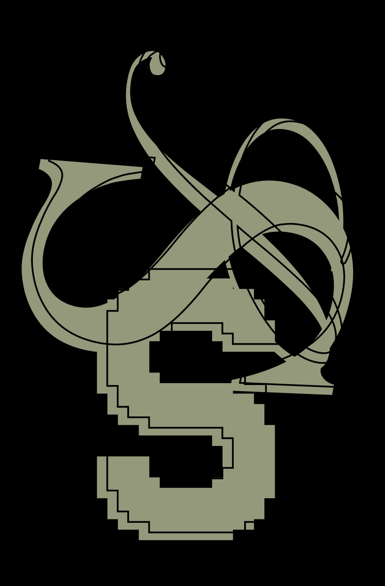

SON
DER
DER
The realization that each random passerby is living a life as vivid and complex as your own — populated with their own ambitions, friends, routines, worries and inherited craziness — an epic story that continues invisibly around you like an anthill sprawling deep underground, with elaborate passageways to thousands of other lives that you'll never know existed, in which you might appear only once, as an extra sipping coffee in the background, as a blur of traffic passing on the highway, as a lighted window at dusk.
